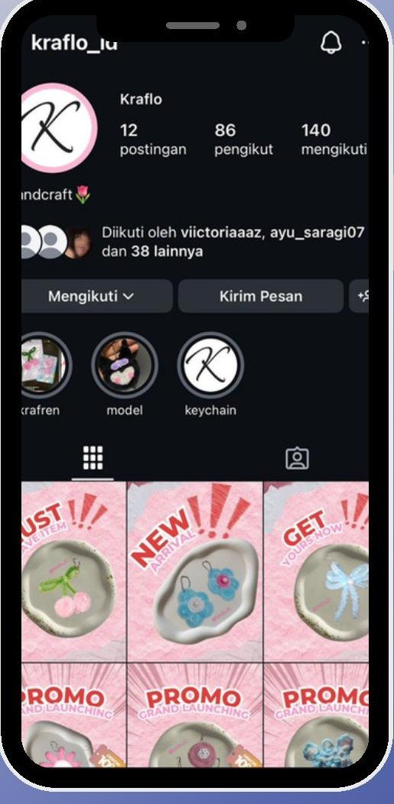
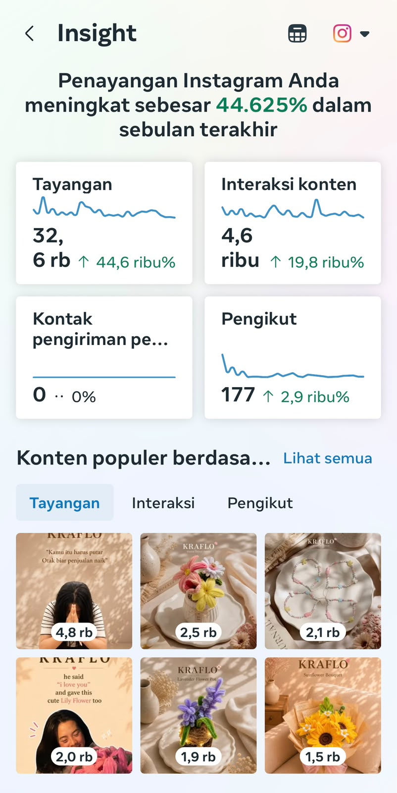
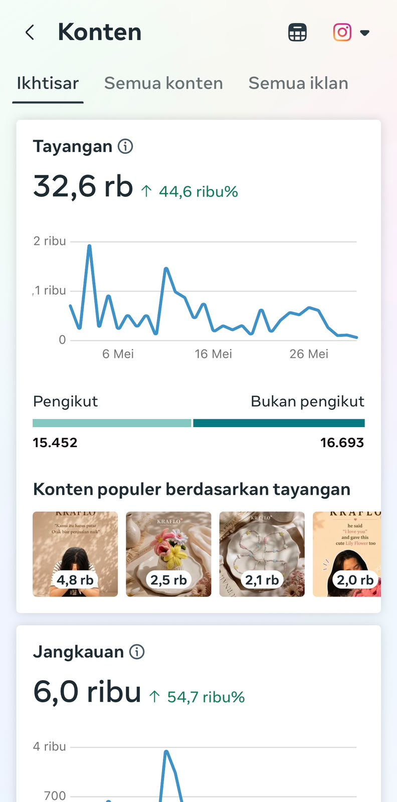
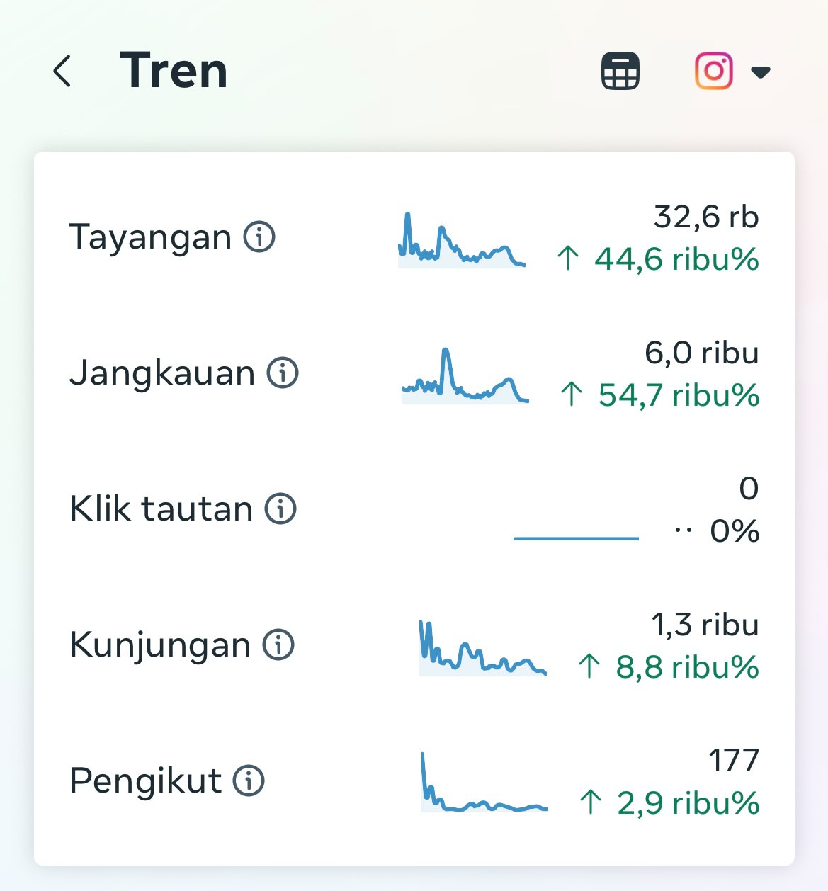
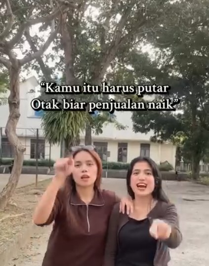
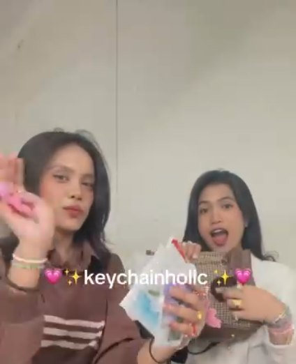
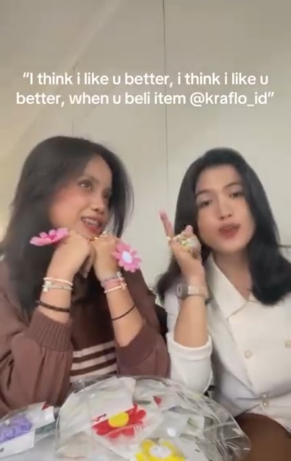
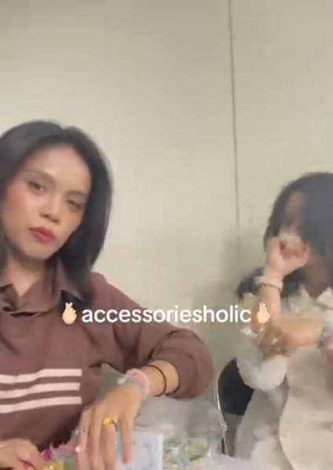
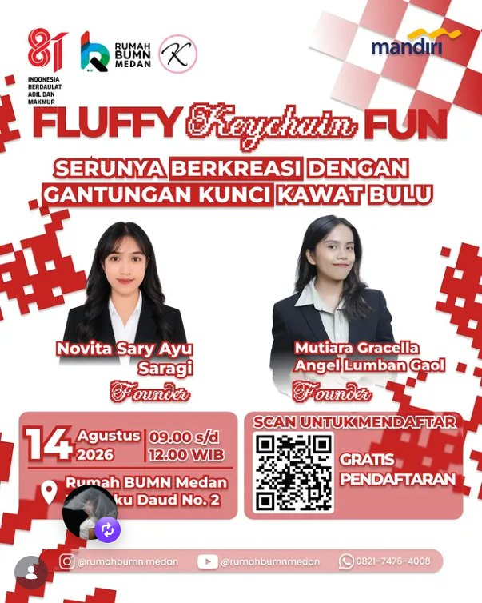

KRAFLO @kraflo_id
Brand handmade chenille wire craft milik saya sendiri — produksi, branding, hingga pemasaran digital saya kelola penuh sejak awal. Sudah terjual 500+ produk dengan basis pelanggan organik dari Instagram & TikTok.

01.1Hasil Utama
01.2Instagram Insight

Ringkasan Insight
Konten Populer
Tren PerformaMengelola akun Instagram brand handmade Kraflo secara penuh — strategi konten, eksekusi posting, dan analisis performa bulanan. Penayangan meningkat 44.625% dalam sebulan terakhir, dengan interaksi konten naik 19.8 ribu%. Konten organik terbaik mencapai 4,8 ribu tayangan, dengan reach kuat dari luar basis followers.
01.3Engagement Rate
01.4Konten Reels
Konten Reels berbasis tren untuk akun brand sendiri — format relatable, POV, dan Holic Challenge yang dipadukan dengan pesan produk.

♥ 225
♥ 124
♥ 56
♥ 5101.5Narasumber & Workshop

Fluffy Keychain Fun — Serunya Berkreasi dengan Gantungan Kunci Kawat Bulu
Hadir sebagai narasumber dalam kapasitas Founder @kraflo_id di kegiatan Pembinaan Craft Rumah BUMN Medan, bersama Novita Sary Ayu Saragi. Membagikan teknik membuat gantungan kunci dari kawat bulu (chenille wire) sebagai ide produk kreatif untuk pelaku UMKM.

Berperan sebagai Narasumber dan Fasilitator Workshop pembuatan kerajinan tangan kawat bunga (wire flower craft) di Rumah BUMN — membagikan teknik produksi Kraflo secara langsung kepada peserta workshop, memperluas dampak brand di luar penjualan produk semata.